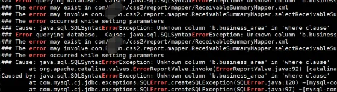
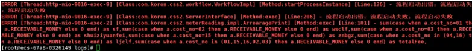
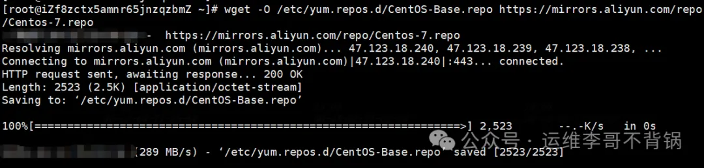
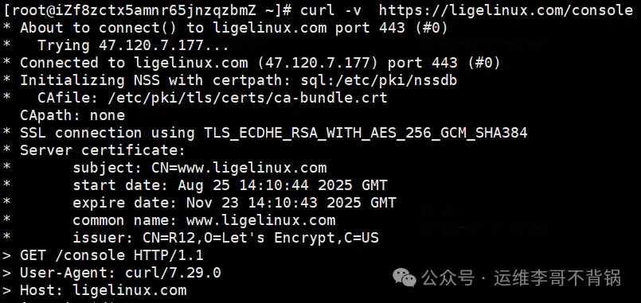
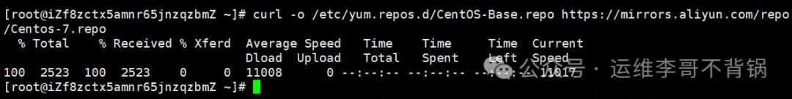
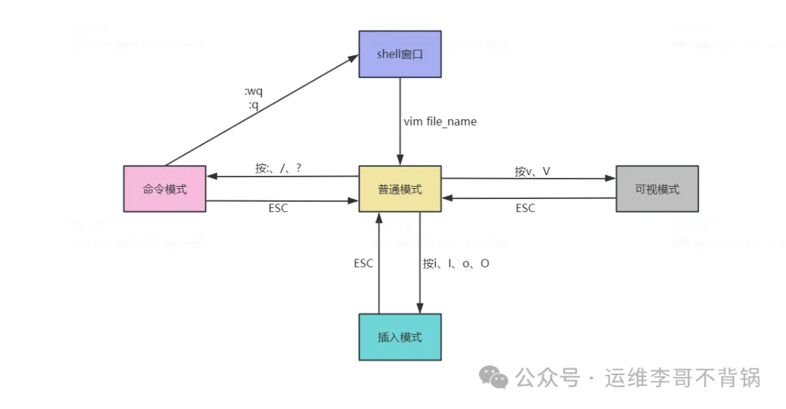

1 典型Linux面试题 (Greg, wget, curl，Vim)
1 如何查看系统资源使用情况？
top # 实时显示系统运行信息（CPU、内存、进程）
htop # top 的增强版（需安装）
free -h # 查看内存使用情况
df -h # 查看磁盘使用率
du -sh * # 当前目录下每个文件夹占用空间
vmstat 1 5 # 显示虚拟内存使用情况
iostat -x 1 # I/O 负载（需安装 sysstat）
uptime # 查看系统运行时长和平均负载
2 如何查看端口是否被占用？
面试官目的：排查端口冲突或服务是否成功启动。
netstat -tulnp | grep :端口号
ss -tulnp | grep :端口号 # 推荐使用，效率更高
lsof -i:端口号 # 查看具体哪个程序占用端口
3 如何给文件添加执行权限？
chmod +x script.sh # 添加执行权限
chmod 755 script.sh # rwxr-xr-x：常用于可执行脚本
ls -l # 查看权限
# chown命令修改属主属组
chown liyb.liyb script.sh # 将脚本属主和属组修改为liyb
# -R 参数可以将权限递归
4 如何查看某个进程的详细信息？
ps aux | grep 进程名 # 查找进程 PID 和状态
top -p PID # 查看指定 PID 的动态资源占用
cat /proc/PID/status # 查看进程详细状态
lsof -p PID # 查看进程打开的文件
strace -p PID # 跟踪系统调用（排查卡顿）
5 软链接和硬链接的区别？
- 软链接：类似 Windows 快捷方式，指向文件路径。
- 硬链接：指向相同的 inode，不依赖文件名。
区别：
删除原文件：软链接失效，硬链接仍然可用。
跨分区：软链接可以，硬链接不行。
目录：通常不允许创建硬链接
ln -s source.txt softlink.txt # 创建软链接
ln source.txt hardlink.txt # 创建硬链接
6 Linux 系统负载高怎么办？
确认负载：
uptime # 查看 load average（过去1、5、15分钟）
top # 查看 CPU、内存占用进程
查看 I/O 压力：
iostat -x 1
iotop # 实时查看 I/O 重的进程
内存检查：
free -m
vmstat 1 5
日志检查：
dmesg | tail # 内核错误信息
journalctl -xe # 查看最近系统错误
高级工具：
strace、perf top、sar 等用于深入性能分析
8 如何查看和分析系统日志？
日志位置：
/var/log/messages # 系统日志（传统 Linux）
/var/log/syslog # Debian 系
/var/log/dmesg # 启动硬件日志
journalctl -xe # systemd 日志查看器
有些是应用日志，需要根据实际的配置路径来查看，查看日志时一般使用tail -f 来持续查看日志输出
9 Linux 如何设置定时任务？
crontab -e # 编辑当前用户的定时任务
crontab -l # 查看当前任务
语法结构：
* * * * * command_to_run
分 时 日 月 星期 要执行的命令
示例：每天凌晨 3 点执行备份脚本
0 3 * * * /home/user/backup.sh
10 如何查找文件或内容？
find /path -name "*.log" # 按名称查找
find / -type f -size +100M # 查找大文件
查找文件内容：
grep "关键词" 文件名
grep -r "关键词" ./ # 递归查找
find . -type f | xargs grep "关键词"
12个grep命令行组合
分享一下grep常用组合。在 Linux/Unix 的日常运维、开发调试、日志分析中，grep 是几乎人手必备的工具。
1 最简单查找
grep "ERROR" /var/log/messages
这是精确查找方式，查找日志里所有包含 ERROR 的行。
2 忽略大小写
grep -i "error" /var/log/messages
这是模糊查找方式，-i参数可以忽略大小写。无论 error、Error、ERROR 都能搜到。
3 显示行号 + 高亮
grep -ni --color=auto "ERROR" /data/tomcat/logs/catalina.out
-n带行号输出、带高亮，快速定位问题行。

4 统计关键字出现次数
grep -c "ERROR" /var/log/messages
输出匹配总次数，而不是具体内容。
5 排除干扰信息
grep "ERROR" /var/log/messages | grep -v "DEBUG"
先匹配 ERROR，再过滤掉 DEBUG 行。 在复杂日志里很常用。
6 多关键字组合
grep -E "ERROR|WARN" /var/log/messages
同时查找 ERROR 或 WARN。
7 抽取关键部分
grep -o "ERROR.*" /data/tomcat/logs/catalina.out
只输出匹配片段，比如提取 ERROR 开头的报错内容。

8 搜索整个目录
grep -ir "https://www.liyb.com" ./logs
-r 参数是遍历当前目录及目录下所有文件，在代码目录里递归搜索 https://www.liyb.com 标记。
9 限定文件类型
grep -ir --include="*.log" "Logger" ./logs
只搜 .log 文件，避免无关文件干扰。
10 查看上下文
grep -C 3 "ERROR" catalina.out
匹配结果前后各显示 3 行上下文。 组合：
- -A N 只看后面 N 行
- -B N 只看前面 N 行
11. 实时过滤日志
tail -f catalina.out | grep "ERROR"
生产环境实时盯报错。 组合增强版：
tail -f catalina.out | grep -E "ERROR|WARN" | grep -v "DEBUG"
实时只看 ERROR/WARN，过滤掉 DEBUG，清爽很多。
12. 结合 find 精确搜索
find ./ -name "*.log" | xargs grep "OutOfMemory"
在所有 .log 文件里查找 OutOfMemory 报错。
3 curl和wget的正确使用姿势
1 区别：定位不同
wget：专注于下载，curl：专注于数据传输
简单来说，如果你想下载文件，用wget；如果你想调试API、传输复杂数据，用curl。
2 wget：专业的下载工具
2.1 核心用途
- 递归下载整个网站
- 断点续传大文件
- 批量下载资源
2.2 常用操作
# 基本下载，后面直接加URL
wget https://packages.gitlab.com/gitlab/gitlab-ce/packages/ol/9/gitlab-ce-18.2.8-ce.0.el9.x86_64.rpm
# -c: 断点续传（生产环境必备！）
wget -c https://packages.gitlab.com/gitlab/gitlab-ce/packages/ol/9/gitlab-ce-18.2.8-ce.0.el9.x86_64.rpm
# -b：后台下载
wget -b https://packages.gitlab.com/gitlab/gitlab-ce/packages/ol/9/gitlab-ce-18.2.8-ce.0.el9.x86_64.rpm
# 限速下载（避免影响业务）
wget --limit-rate=200k https://packages.gitlab.com/gitlab/gitlab-ce/packages/ol/9/gitlab-ce-18.2.8-ce.0.el9.x86_64.rpm
# -r：递归下载整个目录
wget -r -np -nH https://baidu.com/files/
# 下载并重命名
wget -O /etc/yum.repos.d/CentOS-Base.repo https://mirrors.aliyun.com/repo/Centos-7.repo
# 指定重试次数
wget -t 5 https://baidu.com/unstable-file.zip
# 超时设置
wget -T 30 https://baidu.com/slow-file.zip

3 curl：强大的数据传输工具
3.1 核心用途
- API调试和测试
- 复杂HTTP请求
- 文件上传
- 协议支持广泛（支持20+种协议）
3.2 常用操作
# 基本请求
curl curl https://ligelinux.com
# 显示详细请求信息（调试神器）
curl -v https://ligelinux.com/console
# 只显示响应头
curl -I https://ligelinux.com/console
# 指定请求方法
curl -X POST https://ligelinux.com/console
curl -X GET https://ligelinux.com/console
# 发送JSON数据
curl -X POST \
-H "Content-Type: application/json" \
-d '{"name":"张三","email":"zhangsan@example.com"}' \
https://baidu.com/users
# 输出到文件
curl -o /etc/yum.repos.d/CentOS-Base.repo https://mirrors.aliyun.com/repo/Centos-7.repo
# 跟随重定向
curl -L https://ligelinux.com/console

4 关键区别总结
| 特性 | wget | curl |
|---|---|---|
| 主要定位 | 下载工具 | 数据传输工具 |
| 协议支持 | HTTP, HTTPS, FTP | 20+种协议 |
| 递归下载 | 原生支持 | 不支持 |
| 断点续传 | 原生支持 | 需要特定参数 |
| API调试 | 有限 | 非常强大 |
| 输出默认 | 保存到文件 | 输出到stdout |
5 常见误区纠正
误区1：curl不能下载文件
错误：很多人认为curl只能查看内容不能下载
正确：curl也能下载
# curl也可以下载文件
curl -O https://mirrors.aliyun.com/repo/Centos-7.repo # 保持原文件名
curl -o /etc/yum.repos.d/CentOS-Base.repo https://mirrors.aliyun.com/repo/Centos-7.repo
# 自定义文件名

误区2：wget可以很好地进行API调试
错误：用wget测试复杂API
正确：wget适合简单下载，复杂API应该用curl
误区3：两者可以完全互换
错误：认为curl和wget功能相同
正确：各有专长，根据场景选择
总之记住这个简单的原则：下载用wget，调试用curl。
4 Vim
yum install -y vim

1、普通模式
默认的编辑模式。从 shell 窗口打开文件进入的第一个模式，其他模式可以通过按 ESC 键回退到普通模式。
2、命令模式
用于执行复杂查询命令，从普通模式输入“:”，“/”或“?”等符号即可进入命令模式，回车键表示输入完成
3、插入模式
该模式就类似 window 中操作文本文件，普通模式下可通过输入“i”,“o”等字符即可进入插入模式。编辑完成后按 ESC 键退出到普通模式
4、可视模式
用于选定文本块；可以在正常模式下输入“v”（小写）来按字符选定，输入“V”（大写）来按行选定，或输入“Ctrl-V”来按方块选定。
三、每个模式的常用操作
1、vim 打开文件方法
- vim filename 正常打开vim文件
- vim + filename 打开文件，并将光标置于最后一行
- vim +n filename 打开文件，并将光标置于第n行
- vim +/ssh passwd 打开文件，并将光标置于第一个与ssh匹配的位置
- vim -r filename 恢复上次vim打开时崩溃的文件
2、普通模式
- G 跳到最后一行
- gg 跳到第一行
- 5G 跳到第5行
- yy 复制当前行
- 5yy 复制从当前行往后的5行
- p 粘贴已复制的行到光标后
- P 粘贴已复制的行到光标前
- dd (1)剪切当前行，以p粘贴；(2)删除当前行
- 5dd 删除5行
- dG 从当前行删到最后一行
- D 从光标处删除到行尾
- 5dG 从当前行删到第五行
- x 删除光标所在位置的字符
- 5x 删除光标所在位置的字符及往后的5个字符
- X 删除光标所在位置的前一个字符
- u 撤销之前的操作
- Ctrl + r 反撤销（恢复撤销）
- 数字0或者^ 将光标移动到当前行的行首
- $ 将光标移动到当前行的行尾
- ctrl +f 向下翻页
- ctrl +b 向上翻页
- N 查找下一个相同的字符
- N 查找上一个相同的字符
- r替换光标所在位置的字符
- R 从光标当前位置开始替换字符，输入内容会覆盖后面等长的内容，按“Esc”结束输入
- h向左移动光标
- j向下移动光标
- k向上移动光标
- l向右移动光标
3、命令模式常用命令
- :wq 保存退出
- :wq! 强制保存退出
- :q 不保存退出
- :q! 强制退出，一般已经对文件内容已经进行了修改，不保存强制退出的情况使用
- :set nu 设置行号显示
- :set nonu 取消行号
- :set list 取消行号
- set paste 启用粘贴模式
- set nopaste 关闭粘贴模式
- :s/a/b/g 将当前光标所在行中所有a替换成b
- :2,5s/a/b/g 将2-5行中所有a替换成b
- :%s/a/b/g 将文件所有的a替换成b
- /word 从文本查找字符串，按“n”可以查看下一个相同字符 .注意：查找会区分大小写
- /^word 查询以work开头的行
- /work$ 查询以work结尾
- ？work 从文本查找字符串，按“n”可以查看上一个相同字符
4、进入插入模式方法
- i光标所在位置插入
- I光标所在位置行首插入
- o光标所在位置下一行插入
- O光标所在位置上一行插入
- a光标所在位置下一个字符的位置插入
- A光标所在位置行尾插
进入到插入模式后就如同进入一个文档文件，按ESC键退出到普通模式
5、可视化模式常用操作
- v 字符选择模式，选中光标经过的所有字符
- V 行选择模式，选择光标经过的所有行